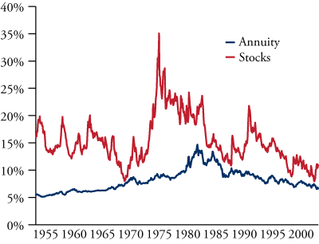

Are Annuities Wise Investments?

Insurance companies spend a lot of money on advertising aimed at convincing investors that buying an annuity is a wise investment decision. But are annuities actually good investments for long-term investors? This is an important question that deserves a thoughtful answer.
First, it’s important to understand that there are many different types of annuities that have been cooked up over the years, and many are complex, opaque, and high-fee products that end up benefitting insurance companies at the expense of individual investors. That said, there are a handful of annuity options that are worth taking seriously, like the classic single premium immediate annuity.
Here’s how a single premium immediate annuity works. An investor purchases this kind of annuity with one large initial payment and then receives a small fixed monthly payment for the rest of his life. Married couples can purchase an annuity that makes monthly payments for as long as either spouse is living. The insurance company invests the premiums it receives, and the extra payments made to investors who die later than expected are offset by the payments forfeited by investors who die sooner than expected.
For example, consider a 65-year-old man married to a 60-year-old woman. At recent rates, this couple could buy an annuity for an initial premium of $100,000 that would pay them about $463.91 per month for as long as either spouse is living. Over the course of a year, the couple would receive $5,566.92 in payments. This is equivalent to a 5.6% withdrawal rate—that is, the couple is able to receive an annual income equal to 5.6% of their initial $100,000 investment.
This may sound like a good deal, but how does it compare with other investment options? What if, instead of buying an annuity, the couple had just invested their $100,000 in stocks and simply withdrew a fixed amount each month from their portfolio? Of course, we can’t predict the future, but we can use historical data to evaluate how annuities and stocks have performed in the past.
The chart to the right shows a comparison of simulated withdrawal rates for annuities and stocks over various 40-year timeframes. The blue line represents the withdrawal rate of a joint life annuity purchased for a 65-year-old man married to a 60-year-old woman based on the latest Social Security life tables and historical US Treasury yield curves.
The red line represents how much an investor could have withdrawn from a stock portfolio without running out of money beginning at a given starting date and continuing to make monthly withdrawals for the next 40 years. This stock simulation is based on the historical returns of a US small cap value portfolio calculated by finance professors Eugene Fama and Kenneth French. Although the sustainable withdrawal rate can only be exactly calculated in hindsight, there is sufficient data to conservatively estimate 40-year withdrawal rates with starting dates as late as 2002.
This comparison gives the annuity a significant advantage by assuming that at least one spouse lives another 40 years, an outcome only expected to occur about 3% of the time. This very long lifespan represents the best case scenario for the owner of an annuity. However, despite a big advantage, the annuity compares quite poorly to simply making withdrawals from a stock portfolio. There was no 40-year period in which the annuity provided a better withdrawal rate than stocks. Conversely, in 92% of test periods, the withdrawal rate for stocks was at least 25% higher than the annuity withdrawal rate. In some periods, the sustainable withdrawal rate for stocks turned out to be double, triple, or even quadruple the annuity’s rate.
The simulation presented here is admittedly simple, ignoring real world complexities such as inflation, fees, and taxes, but it does provide a basic framework for thinking about how annuities compare with a long-term investment in stocks. Certainly, annuities provide much greater psychological comfort than stocks, since they provide investors with an up-front guaranteed withdrawal rate, while also relieving them from the very real mental burden of riding out painful but ultimately temporary stock market declines. Nevertheless, we believe the cost of this psychological comfort is too high, especially for investors who wish to potentially leave behind an inheritance. Instead, we would advise disciplined long-term investors who need income from their savings to invest their capital in a diversified, multifactor portfolio of stocks and simply make periodic withdrawals from their accounts at a conservative rate in the neighborhood of 5% annually.